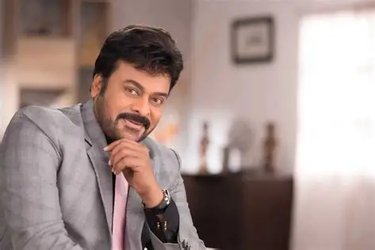

Konidela Siva Sankara Vara Prasad, born on August 22, 1955,is a legendary Indian actor, producer, and politician known as the"Megastar" of Telugu cinema. Debuting in 1978, he became a superstar in the 1980s with hits like Khaidi.